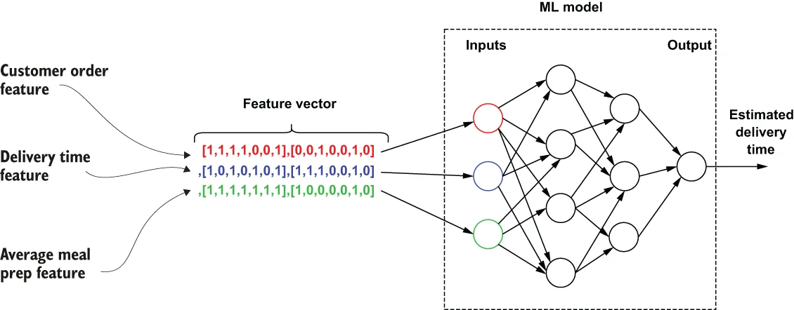

In ML, the term feature refers to an individual numeric or symbolic property that represents a unique aspect of an object. These features are often combined into an n-dimensional vector of numerical features, or a feature vector, that is then used as an input to a predictive model.
在 ML 中，特征（feature）这个术语指的是某个单独的数值型或符号型属性，它代表了某个对象的一个独特侧面。这些特征常常被组合成一个由数值特征构成的 n 维向量，即特征向量（feature vector），随后被用作一个预测模型的输入。

Figure 11.2 The delivery time estimation model requires a feature vector comprised of features from multiple sources. Each feature is an array of numerical values between 0 and 1.
图 11.2 送达时间预估模型需要一个由来自多个来源的特征所构成的特征向量。每一个特征都是一个取值在 0 到 1 之间的数值数组。
Every feature in the feature vector represents an individual piece of data that is used to generate the prediction. Consider the estimated time-to-delivery feature of the GottaEat food delivery service. Every time a user orders food from a restaurant, an ML model estimates when the food will be delivered. Features for the model include information from the request (e.g., the time of day or delivery location), historical features (e.g., the average meal prep time for the last seven days), and near real-time calculated features (e.g., the average meal prep time for the last hour). These features are then fed into the ML model to produce a prediction, as shown in figure 11.2. Many algorithms in ML require a numerical representation of features, since such representations facilitate processing and statistical analysis, such as linear regression. Therefore, it is common that each feature is represented as a numerical value, as it makes them useful across various ML algorithms.
特征向量中的每一个特征，都代表着一条被用来生成预测的数据。来看看 GottaEat 外卖服务的"预计送达时间"这个特征：每当用户从某家餐厅点餐时，都会有一个 ML 模型来估计餐品何时会被送到。该模型的特征包括来自请求的信息（例如一天中的时刻或配送地点）、历史特征（例如过去七天的平均备餐时间），以及近乎实时计算出来的特征（例如过去一小时的平均备餐时间）。这些特征随后被喂进 ML 模型以产出预测，如图 11.2 所示。ML 中有许多算法都要求特征采用数值化的表示，因为这种表示便于处理和统计分析，例如线性回归。因此，把每个特征都表示成一个数值是很常见的做法——因为这让它们能够在各种 ML 算法之间通用。